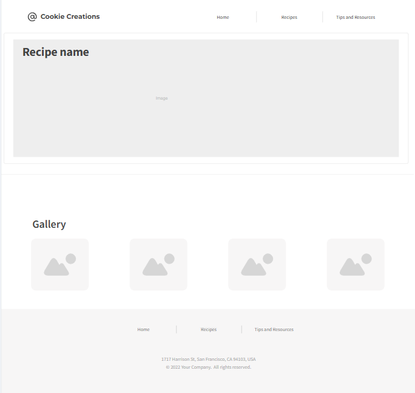
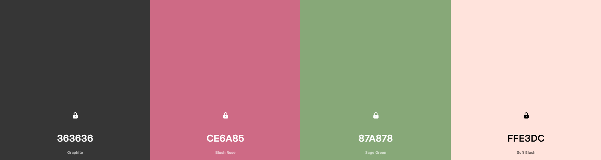

Wireframe
Mobile View

Desktop/Tablet View

Cookie Creations
This name was selected because it reflects a fun and inviting baking website focused on crafting delicious cookie recipes. It is simple, memorable, and clearly communicates the theme of the site.
The purpose of this website is to provide users with a collection of cookie recipes, baking guidance, and helpful resources. The site will feature a recipe gallery loaded dynamically from a JSON file, a modal view for detailed instructions, and general baking tips for beginners and experienced bakers.
The following colors will be used throughout the website:
Color Scheme Preview:
Montserrat – Used for all headings (H1–H3) for a clean, modern look.
Open Sans – Used for all body text for readability and simplicity.